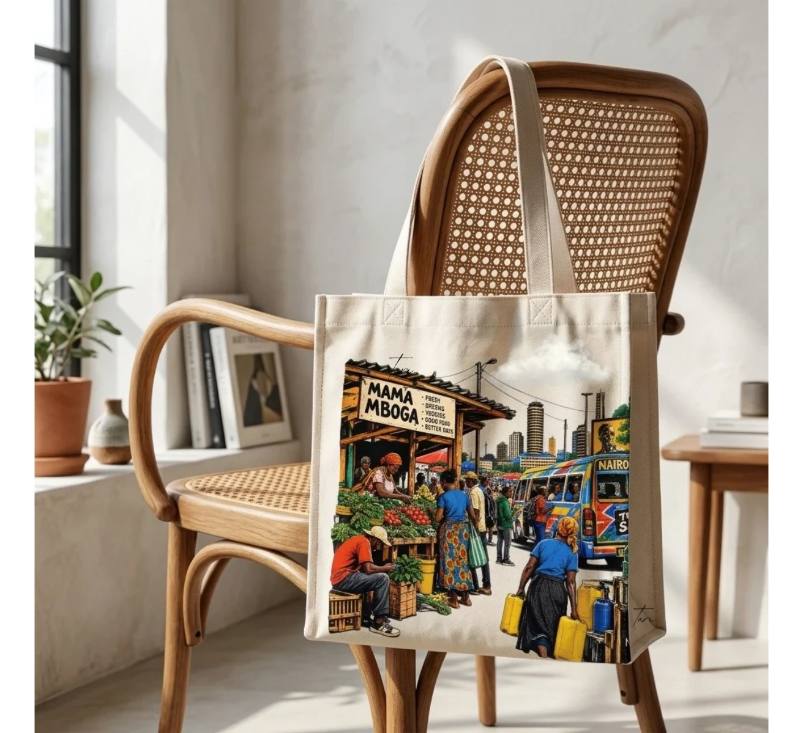
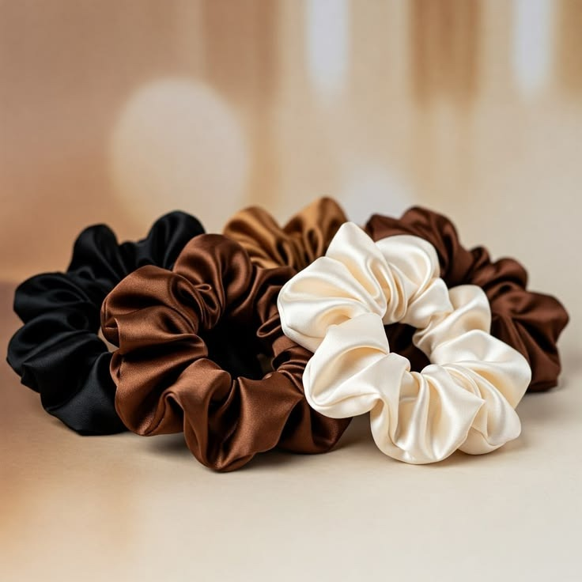
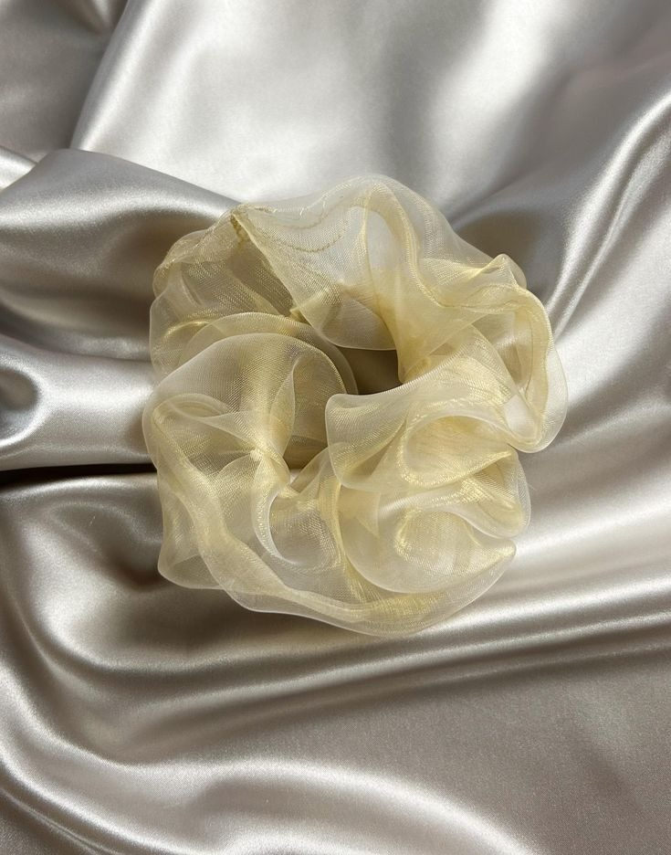
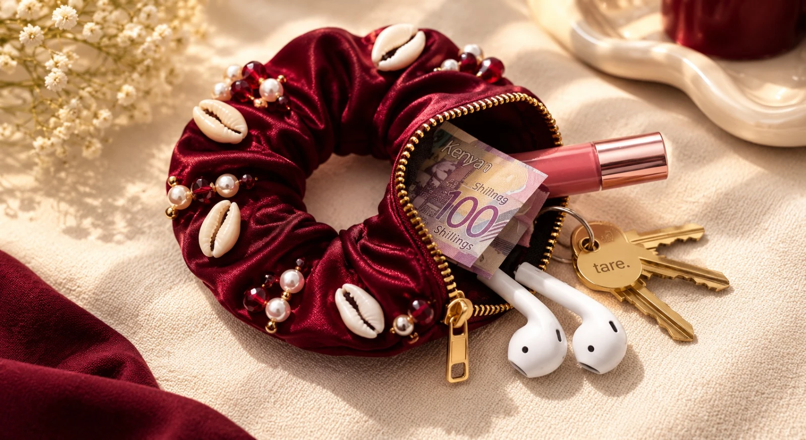

Satin that's kind to your hair.
Smooth fabric means less tugging and less friction than a regular elastic, so your edges and curls stay happy.
Satin scrunchies for soft hair days, plus the Mama Mboga tee and tote celebrating the city we love.




Every scrunchie comes in Small, Medium and Large. Tap through the options and we'll write your WhatsApp order for you.
Colours shown are examples. Ask us what's in stock, or request a custom colour. Prices are in Kenyan shillings.
Not sure? Send us a pic of your hair and we'll help you choose.
Sleek ponytails, fine or shorter hair, and wearing on your wrist.
The everyday one. Works for most hair types and a messy bun.
Thick, curly or natural hair, braids and big statement puffs.
Art inspired by Nairobi's markets, matatus and the everyday heroes who keep our city moving, printed on pieces you'll use every day.
Custom printing is available on tees and totes: full-colour prints of your art, your words or your brand.
Contemporary, gender-neutral design pieces that celebrate cultural identity, inclusivity and cross-cultural exchange.
Smooth fabric means less tugging and less friction than a regular elastic, so your edges and curls stay happy.
From everyday satin to cowrie-shell statement pieces.
Our satin bonnets protect your hair overnight, so your silk press or braids last longer.
Zipped scrunchies carry cash, keys, lip gloss or earbuds. Hands free, all day.
Thoughtful ideas. Tangible forms.
From cowrie shells to Mama Mboga's market stall, our pieces celebrate the people and culture around us. Follow us on Instagram for new drops.
Text, voice note or form, whichever is easiest for you.
Pick your style, colour and size from the collection.
Tap "Order" and your message is ready to go on WhatsApp. Or use the order form.
We'll confirm your total and sort out delivery or pick-up with you.
Make this page work the way you need it to. Your settings are saved on this device.